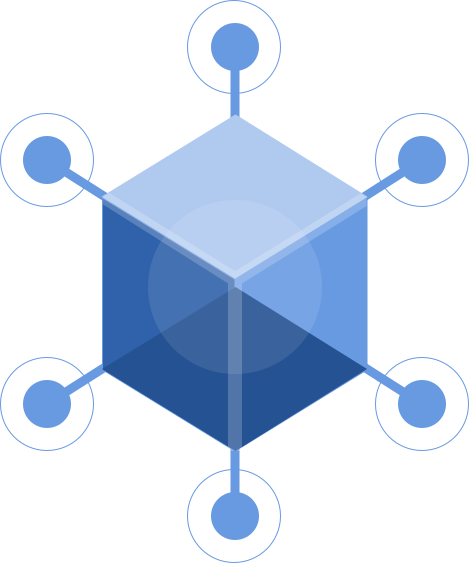

Showing that Tessera never stops looking
Tessera continuously scans the public internet for signals of cybersecurity issues that can be attributed to Dana's vendors. When it finds a high-risk issue, it categorizes it and opens an investigation task for her team.
Four ways to make that visible. Every option replays the same four scripted signals, so you can compare how each one shows the scan, the categorization, and the hand-off to a task. Use each option's button to trigger a signal on demand.
- 1 · ScanBreach dumps, code repos, CVE feeds, certificate logs, internet-wide scans, news and filings, watched 24/7.
- 2 · CategorizeEach signal is matched to a vendor, scored, and labeled: breach, vulnerability, credential exposure, certificate.
- 3 · Create a taskHigh-risk findings become an investigation task with an SLA and a suggested owner.
Radar sweep
The portfolio as a scope. A sweep passes over every vendor, and the one it finds lights up and drops a task into the queue.

- Reads as
- Active surveillance. The sweep is the scanning, and a vendor lights up at the moment it is found, so discovery has a visible cause.
- Best home
- Hero of the Monitoring & Alerts page, or a full-screen "wall display" mode for a security team.
- Trade-off
- A familiar metaphor, close to cliché. Only the ring carries meaning (risk tier); a vendor's angle on the scope is arbitrary.
Tessera mosaic
Every vendor is one tile, all 612 at once. A scan line crosses the mosaic, and the tile with a new finding turns red. A tessera is a mosaic tile.
- Reads as
- The whole portfolio in one glance. The scale (612 vendors) is the picture, and the brand idea (a mosaic of tiles) does the explaining.
- Best home
- Top of the Dashboard, above the stat cards, or the overview state of the Vendors page.
- Trade-off
- A density map, not a list: a tile means nothing until it is flagged or hovered. Needs a sort rule (by tier, region, or owner) to make position meaningful.
Signal flow
The scan as a pipeline. Signals stream in from the public internet, converge on Tessera, and only the few that matter come out as tasks.
- Reads as
- How the system thinks: thousands of signals in, a handful of tasks out. It makes the categorization step visible, which the other options only imply.
- Best home
- The Monitoring & Alerts page, onboarding, and sales demos, where the point is to explain what Tessera does for you.
- Trade-off
- About the system, not Dana's portfolio, so it is less useful day to day. It also reuses the hub-and-spoke shape of the Data Mapping hero, so the two pages could feel alike.
Pulse ribbon
A heartbeat strip. Calm and steady while the scan runs; a red spike when it finds something, and a banner drops down with the task.
Good afternoon, Dana
Thursday, September 18 · Northbridge Financial Group · US, EU & Canada portfolio
- Reads as
- A pulse: steady means the scan is healthy and nothing needs you. A spike means look now. The quiet state is the message.
- Best home
- Pinned under the page heading on the Dashboard, and as a compressed strip in the top bar on every other page.
- Trade-off
- The least expressive of the four, and it says little about scale. It is the only one cheap enough to stay on screen all the time.
Combining them
These answer different questions, so they are not really rivals. The pulse ribbon is the always-on signal ("is the scan alive, and do I need to act?"). The mosaic is the portfolio view for the Dashboard. The signal flow explains the system on the Monitoring & Alerts page. The radar is the most cinematic, and the one I would drop first.
The task card in the queue and the banner in option 4 are separate designs for the same moment. Whichever direction you pick, that hand-off is worth iterating on next: what Dana sees the second a critical signal becomes work for the team.